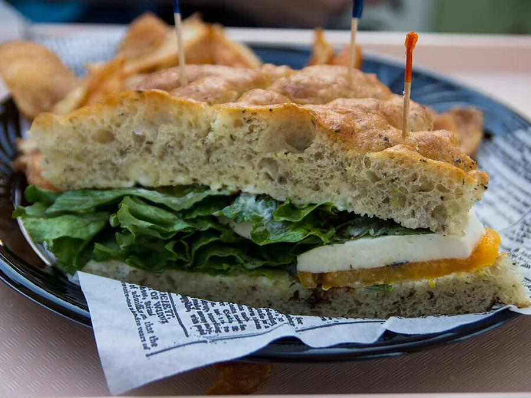
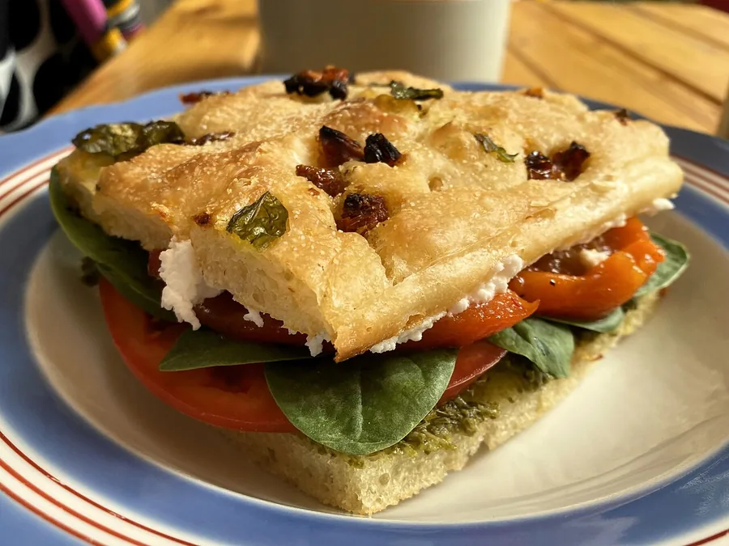
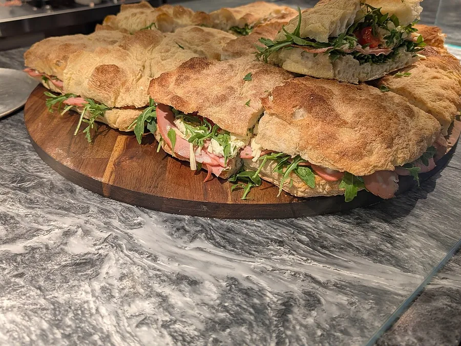

La preferita della settimana
Margherita Romana
Sottile, croccante, come si fa a Roma.
Pomodoro Datterino, fior di latte di Agerola e basilico fresco.
Scorri
Prova la Margherita
Romana oggi
★★★★★ Voto 4,8 (320 recensioni)
Impasto steso sottile e cotto finché non scrocchia. Sopra: salsa di pomodoro Datterino, fior di latte di Agerola e basilico fresco.
12 €
Ø 32 cm · 300 g · 750 kcal
All day
Focacce alla romana
Tre farciture, a tutte le ore.
-

Cicoria e fior di latte
Focaccia alla romana con cicoria alla romana e mozzarella fior di latte di Agerola.
17 €Vedi nel menu
-

Crudo, pomodoro e pesto
Focaccia alla romana con prosciutto crudo, fior di latte di Agerola, pomodoro e pesto fresco di basilico.
17 €Vedi nel menu
-

Salame piccante e Brie
Focaccia alla romana con salame piccante, rughetta, Brie e crema di peperoni rossi.
16 €Vedi nel menu
Cucina, vini, cocktail
Il menu
Antipasti Starters
- Caprese ai tre pomodori, burrata di Andria e basilico15 €Three Cherry tomatoes, Andria burrata cheese and basil leaves
- Bigné di baccalà mantecato con salsa yogurt alle erbe14 €Creamed cod puffs with herbs yogurt sauce
- Carpaccio di manzo con rucola e Parmigiano Reggiano18 €Beef carpaccio, rocket salad and Parmigiano Reggiano cheeseCon tartufo · 33 €
- Tagliere di salumi e formaggi italiani30 €Italian cold cuts and cheese selection
- Parmigiana di melanzane al forno17 €Baked aubergine Parmigiana
- Bruschetta con julienne di zucchine alla menta, olio d'oliva, stracciatella di Andria e gamberi fritti17 €Bruschetta with mint zucchini julienne, olive oil, Andria stracciatella cheese and fried shrimps
- Cestino di carciofi croccanti16 €Crispy artichokes basket
- Polpette di vitella come i Saltimbocca alla Romana16 €Veal meatballs with butter and sage sauce topped with crunchy ham like Roman-style saltimbocca
- Spicchi di focaccia con Mortadella IGP di Bologna, burrata di Andria, tartufo nero di stagione e olio Frantoio Gallotti27 €Focaccia slices with Bologna IGP Mortadella, Andria burrata cheese, seasonal black truffle and Gallotti olive oil
- Spicchi di focaccia con stracciatella di Andria, alici del Mar Cantabrico, olio Frantoio Gallotti e scorza di limone21 €Focaccia slices with Andria stracciatella cheese, anchovies from the Cantabrian Sea, Gallotti olive oil and lemon zest
All day
- Avocado toast13 €Toasted bread, avocado cream and poached eggCon tartufo · 28 €
- Avocado toast con salmone marinato16 €Toasted bread with avocado cream, poached egg and marinated salmon
- Club sandwich20 €Sandwich bread, mayo, lettuce, fresh tomato, slow cooked chicken, bacon, Fontina cheese and french fries side
- Focaccia alla Romana con cicoria alla romana e mozzarella fior di latte di Agerola17 €Stuffed Roman-style focaccia with Roman-style sautéed chicory and Agerola fior di latte cheese
- Focaccia alla Romana con prosciutto crudo, fior di latte di Agerola, pomodoro e pesto fresco di basilico17 €Stuffed Roman-style focaccia with raw ham, Agerola fior di latte mozzarella cheese, tomato and fresh basil pesto
- Focaccia alla Romana con salame piccante, rughetta, Brie e crema di peperoni rossi16 €Stuffed Roman-style focaccia with Italian spicy salami, rocket, Brie cheese and sweet bell pepper cream
- Focaccia olio, sale e rosmarino10 €Olive oil, salt and rosemary focaccia bread
Pasta
- Spaghettoni fatti in casa alla Carbonara16 €Homemade spaghetti pasta in Carbonara-style with egg yolk cream, Pecorino Romano cheese, pork cheek and black pepperCon tartufo · 31 €
- Spaghettoni fatti in casa all'Amatriciana16 €Homemade spaghetti pasta in Amatriciana-style with tomato sauce, pork cheek, Pecorino Romano cheese and black pepper
- Spaghettoni fatti in casa Cacio e Pepe16 €Homemade spaghetti pasta in Cacio e Pepe-style
- Fettuccine fatte in casa alla Bolognese17 €Homemade fettuccine pasta in Bolognese-style with Italian beef minced meat and tomato sauce
- Gnocchi fatti in casa alla Sorrentina con stracciatella di Bufala e basilico17 €Homemade gnocchi pasta in Sorrentina-style with tomato sauce, Buffalo stracciatella cheese and basil
- Gnocchi fatti in casa con ragù di polpo al profumo di limone23 €Homemade gnocchi pasta with lemon scented octopus ragout
- Spaghettoni fatti in casa con polpette e ricotta salata20 €Homemade spaghetti pasta with mixed minced meatballs in tomato sauce and salty ricotta cheese
- Fettuccine fatte in casa all'Alfredo20 €Homemade fettuccine pasta in Alfredo-style with butter and Parmigiano Reggiano creamCon tartufo · 35 €
- Spaghettoni fatti in casa con salsa di Datterino e crumble di pane al basilico23 €Homemade spaghetti pasta with Datterino tomato sauce and basil bread crumble
Secondi Main courses
- Polpo rosticciato con cicoria alla romana26 €Roasted octopus with Roman-style chicory
- Baccalà cotto a bassa temperatura con crema di peperoni dolci e vela di pane artigianale29 €Low-temperature cooked cod with sweet pepper cream and a slice of artisan bread
- Trancetto di salmone glassato con soia e miele servito con scarola, uvetta, olive e pinoli27 €Soy and honey-glazed salmon steak served with escarole, raisins, olives and pine nuts
- Tagliata di filetto di manzo con spinaci burro e Parmigiano Reggiano32 €Beef fillet with mixed salad with butter and Parmigiano Reggiano cheese spinachCon tartufo · 47 €
- Tagliata di pollo CBT e misticanza con aceto ai lamponi25 €Slow cooked and grilled chicken and mixed salad with raspberry vinegarCon tartufo · 40 €
- Polpette della Nonna22 €Grandma's meatballs mixed minced meat with tomato and basil sauce topped with Parmigiano Reggiano
- Guancia di vitella, démi-glace e purea di patate35 €Veal cheek, démi-glace and mashed potatoesCon tartufo · 50 €
- Straccetti di manzo con carciofi e scaglie di Parmigiano Reggiano25 €Beef strips with artichokes and Parmigiano Reggiano cheese
- Hamburger di Angus, fontina, pomodoro, insalata, bacon e patatine fritte25 €Angus burger, Fontina cheese, fresh tomato, lettuce, bacon and french fries
Insalate Salads
- Chicken Caesar Salad18 €Caesar salad with grilled chicken, lettuce, bread croutons, Caesar dressing and Parmigiano Reggiano cheese
- Insalata Greca15 €Greek salad with Cherry tomatoes, Feta cheese, Tzatziki sauce, bread croutons, olives, fresh onions, capers and cucumber
- Insalata con salmone scottato, pomodorini, avocado, mango, mandorle e senape al miele25 €Seared salmon, lettuce, Cherry tomatoes, avocado, mango, almonds and honey mustard
Contorni Side dishes
- Insalata ai tre pomodori e basilico9 €Three Cherry tomatoes and basil salad
- Patate Fritte9 €French fries
- Cicoria ripassata alla Romana9 €Roman-style sautéed chicory
- Misticanza con aceto ai lamponi8 €Mixed salad with raspberry vinegar
- Purea di patate10 €Mashed potatoes
- Spinaci all'agro9 €Lemon spinach
Bollicine
- Prosecco extra dry superiore, Merotto40 €Veneto
- Prosecco superiore Rosé, Merotto45 €Veneto
- Franciacorta “Alma”, Bellavista70 €Lombardia
- Franciacorta Rosè, Bellavista80 €Lombardia
- Franciacorta DOCG, Annamaria Clementi Ca' del Bosco180 €Lombardia
- Champagne Rosè, Ruinart160 €Francia
- Champagne Brut Ruinart R160 €Francia
- Champagne Brut Ruinart Blanc De Blanc190 €Francia
- Champagne Brut Cristal Louis Roederer450 €Francia
- Champagne Brut Dom Perignon500 €Francia
Vini rosé
- Côte de Provence, Château Miraval60 €Francia
- Primitivo del Salento “Tramari”, San Marzano38 €
Vini bianchi White wines
- Pinot Grigio 'Feudi di Romans'35 €Friuli
- Sauvignon Sanct Valentin 'St. Michael Eppan'75 €Alto Adige
- Gewurztraminer 'Girlan'45 €Alto Adige
- Sauvignon 'Cormons'40 €Friuli
- Chardonnay 'La Magnolia'40 €Friuli
- Cortese 'Gavi dei Gavi', La Scolca65 €Piemonte
- Chardonnay 'Rossj Bass', Gaia110 €Piemonte
- Chardonnay e Grechetto 'Cervaro Della Sala', Marchesi Antinori220 €Umbria
- Pecorino Bio 'Serranella', Spinelli35 €Abruzzo
- Bellone 'Capolemole', Marco Carpineti40 €Lazio
- Frascati 'Villa Simone', Vigneto Filonardi55 €Lazio
- Fiano d'Avellino 'Exultet', Quintodecimo85 €Campania
- Etna Bianco 'Gamma', Federico Curtaz60 €Sicilia
- Vermentino 'VT', Capichera140 €Sardegna
Vini rossi Red wines
- Pinot Nero 'Patricia', Girlan50 €Alto Adige
- Lagrein 'Rubatsch', Mannincor100 €Alto Adige
- Barolo DOCG, Ettore Germano100 €Piemonte
- Lambrusco '1831', Otello Ceci20 €Emilia Romagna
- Chianti Docg 0.375, Banfi20 €Toscana
- Chianti Docg, Banfi40 €Toscana
- Chianti Classico, Castello di Ama80 €Toscana
- 'Le Volte', Tenuta dell'Ornellaia60 €Toscana
- Bolgheri 'Le serre nuove', Tenuta dell'Ornellaia120 €Toscana
- Brunello di Montalcino 'Pian Delle Vigne', Antinori150 €Toscana
- Valpolicella Ripasso 'Acinatico', Stefano Accordini55 €Veneto
- 'Sassicaia' Tenuta San Guido Bolgheri Sassicaia450 €Toscana
- 'Tignanello' Marchesi Antinori270 €Umbria
- Montepulciano Bio 'Serranella', Spinelli35 €Abruzzo
- Merlot 'Montiano', Cotarella50 €Lazio
- Cesanese Del Piglio 'Hernicus', Coletti Conti50 €Lazio
- Primitivo 'Il Pumo', San Marzano20 €Puglia
- Etna Rosso 'Il Purgatorio', Federico Curtaz60 €Sicilia
Signature Cocktails
- MARCHESE DEL GRILLO17 €Vodka, fresh passion fruit, fresh lime juice and simple syrup
- FASHION SPRITZ17 €Aperol Barbieri, pineapple juice, fresh lime juice and mango syrup
- BASILISCO15 €St. Germain, fresh basil leaves, fresh lime juice and simple syrup
- SO GOOD15 €Tequila, Mezcal, mango syrup, lime juice and salt and pepper crust
- FROM BOULEVARD15 €Bourbon whiskey, Zucca rhubarb liqueur, Italian red vermouth and bitter mix
Analcolici Alcohol-free
- FIVE STARS13 €Pineapple juice, coconut syrup, fresh lime juice and ginger ale
- CHERRY TEMPLE13 €Grenadine syrup, ginger ale, fresh lime juice and maraschino cherry
- NO WAY13 €Gin Tanqueray 00, fresh lime juice, ginger beer and cucumber slice
Birre Beers
- SPINA 0.5 CL MESSINA CRISTALLI DI SALE DRAFT9 €
- ICHNUSA 33CL7 €
- MORETTI FILTRATA A FREDDO 33CL7 €
- MORETTI LA ROSSA 33CL7 €
- BIRRA 101 GLUTEN FREE 33 CL10 €
- MORETTI 00 - ALCOHOL FREE7 €